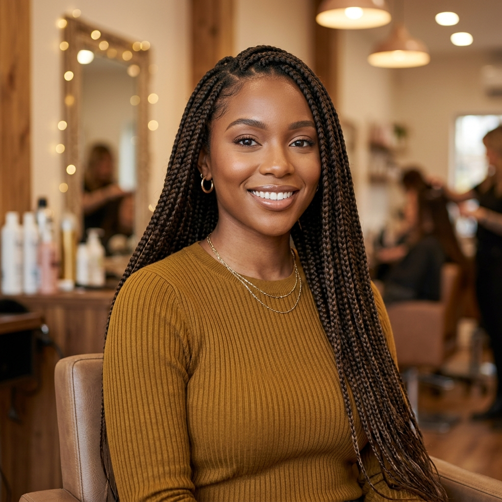
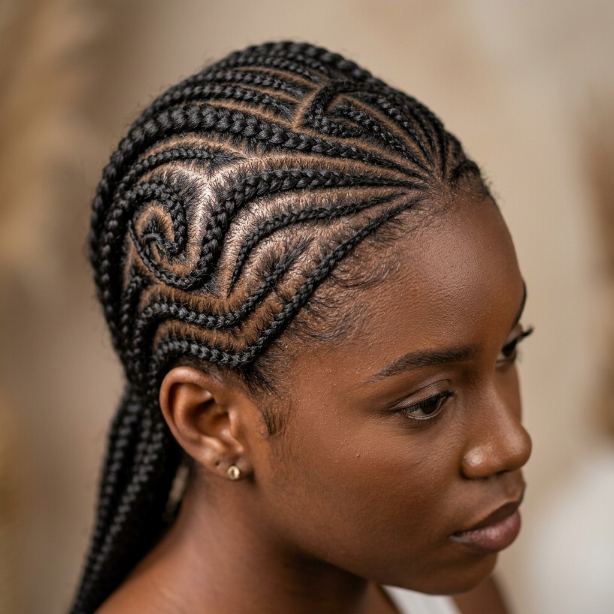
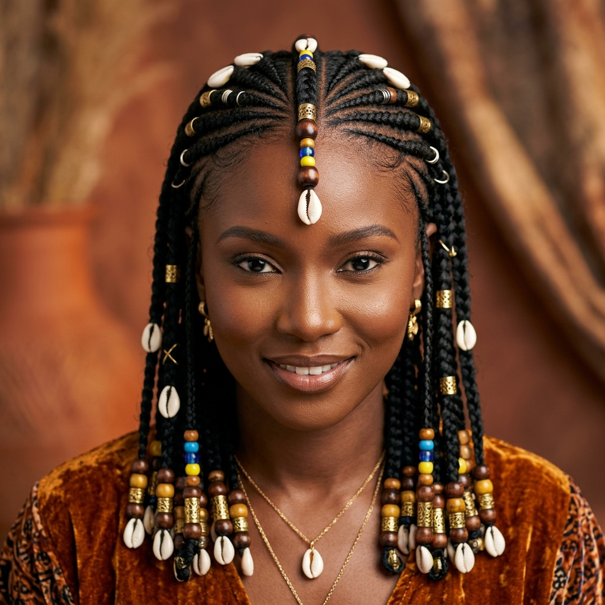
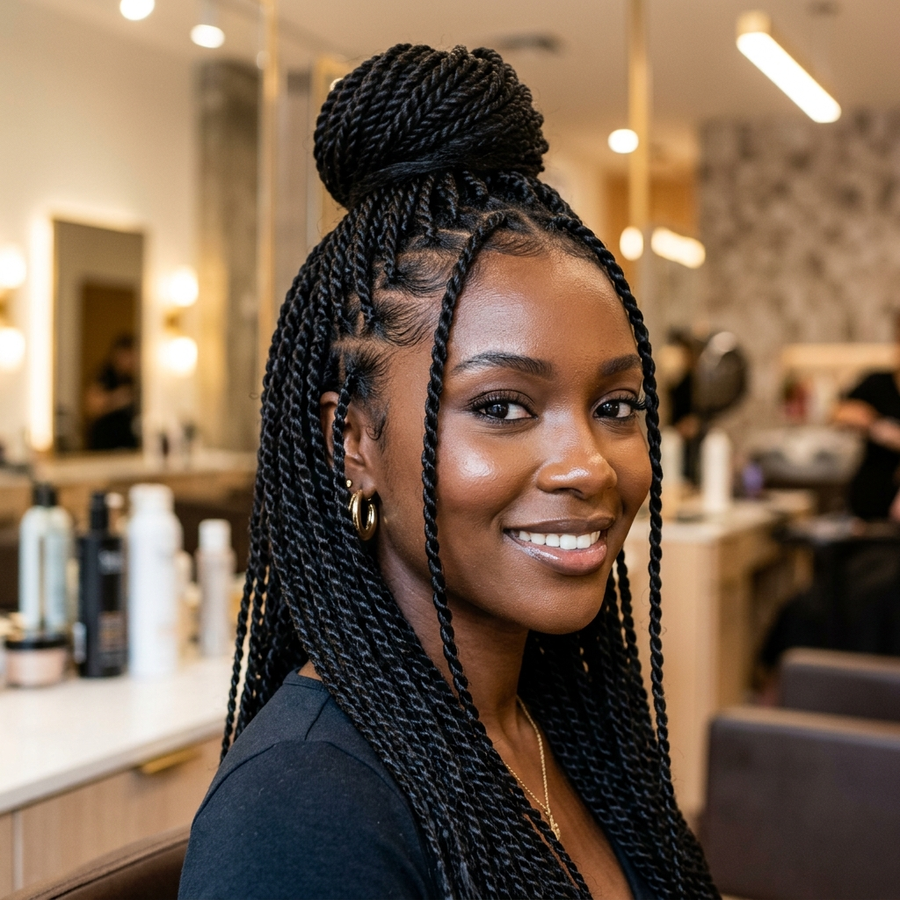
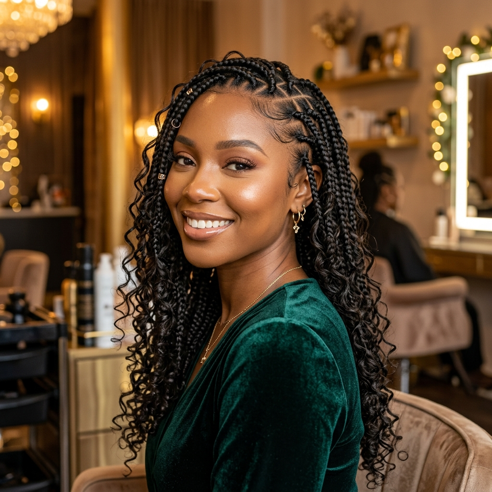
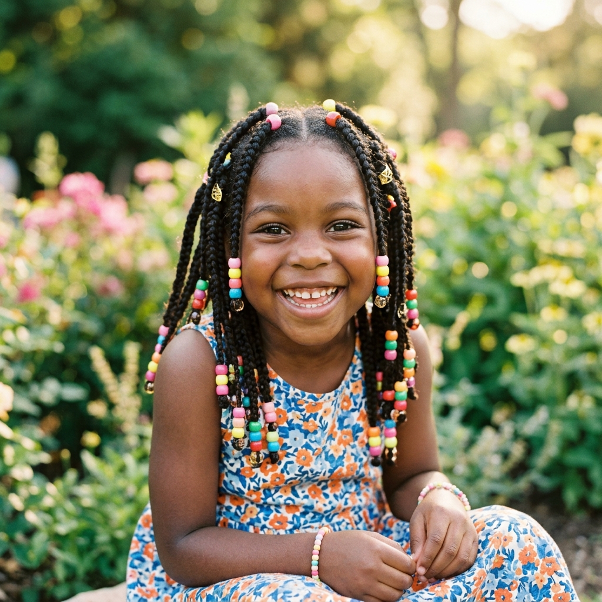

BB
Box Braids
Tranças individuais, clássicas e versáteis. Podem ser usadas soltas, presas ou em penteados diferentes no dia a dia.
Uma visão rápida de cada estilo que trabalho — duração média, manutenção e pra que tipo de ocasião cada um cai melhor. Na hora do agendamento você escolhe o que combina com você.

Tranças individuais, clássicas e versáteis. Podem ser usadas soltas, presas ou em penteados diferentes no dia a dia.

Trança rente ao couro cabeludo, em desenhos retos ou geométricos. Ótima pra praia, academia e uso no calor.

Trança central com laterais soltas e acessórios como miçangas e argolas. Visual marcante pra ocasiões especiais.

Torção em vez de trançado, resultado mais leve e com caimento macio. Boa opção pra quem quer volume sem peso.

Tranças mais grossas e soltas, com efeito volumoso. Muito usada em festas, casamentos e ensaios.

Modelos leves e confortáveis pensados pra rotina das pequenas, com atenção redobrada ao conforto do couro cabeludo.